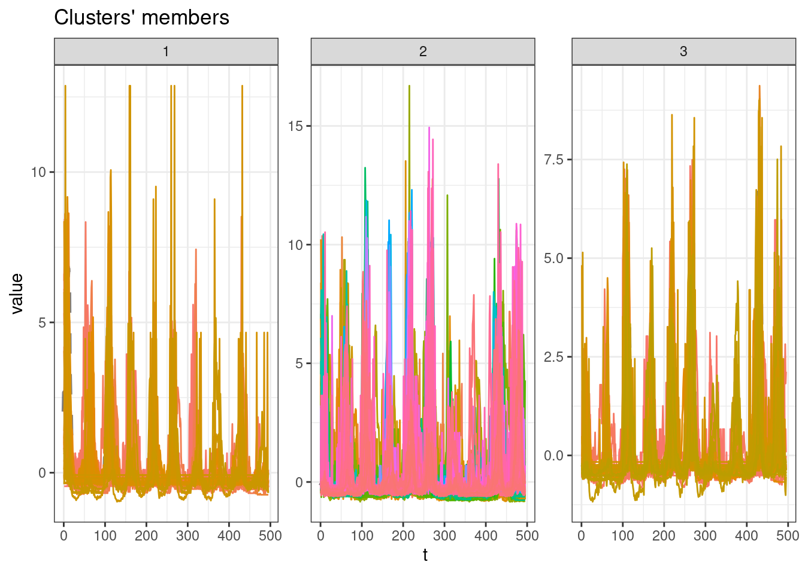

library(tidyverse)
library(arrow)
library(tidymodels)
library(bonsai)
library(finetune)
library(modeltime)
library(timetk)
library(dtwclust)
library(kableExtra)
library(tictoc)Global and subset models
This notebooks aims to reproduce the metodology of the paper submitted to the SBD2023 conference, implementing the global and subset modelling.
This methodology aims to compare the perfomance of models trained with data from all municipalities time-series (global models) and models trained with subset of munipalities time-series (subset models).
Those subset will be created by a clustering algorithm considering the municipalities cases time-series.
Packages
Load data
tdengue <- read_parquet(file = "tdengue.parquet") %>%
drop_na() %>%
select(mun, date, starts_with("cases"))
Note
NA values are created when the lagged variables were calculated. The rows containing those NA values are dropped due machine learning regressors constraints.
For validation purposes, only the
casesandcases_lag*covariates variables are keep.
glimpse(tdengue)Rows: 161,370
Columns: 9
$ mun <chr> "110002", "110002", "110002", "110002", "110002", "110002",…
$ date <date> 2011-02-06, 2011-02-13, 2011-02-20, 2011-02-27, 2011-03-06…
$ cases <dbl> -0.51044592, 0.07880156, 0.66804904, 0.07880156, -0.5104459…
$ cases_lag1 <dbl> 2.43579149, -0.51044592, 0.07880156, 0.66804904, 0.07880156…
$ cases_lag2 <dbl> 0.66804904, 2.43579149, -0.51044592, 0.07880156, 0.66804904…
$ cases_lag3 <dbl> 0.07880156, 0.66804904, 2.43579149, -0.51044592, 0.07880156…
$ cases_lag4 <dbl> 0.66804904, 0.07880156, 0.66804904, 2.43579149, -0.51044592…
$ cases_lag5 <dbl> 0.66804904, 0.66804904, 0.07880156, 0.66804904, 2.43579149,…
$ cases_lag6 <dbl> -0.51044592, 0.66804904, 0.66804904, 0.07880156, 0.66804904…Clustering
This procedure goal is to cluster the municipalities considering the cases time series similarities between them.
Prepare data
Prepare the data for use with the dtwclust package, pivoting the panel data to a wide format and matrix object.
cdengue <- tdengue %>%
select(mun, date, cases) %>%
mutate(mun = paste0("m_", mun)) %>%
arrange(mun, date) %>%
pivot_wider(names_from = mun, values_from = cases) %>%
select(-date) %>%
t() %>%
tslist()SBD method
The SBD method is used to cluster the municipalities, considering a shape-bases distance (k-Shape clustering algorithm). More details on the publicated methodology.
r``length(unique(tdengue$mun)) municipalities will be clustered.
The clustering algorithm is applied with a varying number of \(k\) partitions from 3 to 8.
k_seq <- 3:8
tic()
clust <- tsclust(
series = cdengue,
type = "partitional",
k = k_seq,
distance = "sbd",
seed = 123
)
toc()0.234 sec elapsedCluster Validity Indices (CVI)
To choose the number of partitions, the Silhouette statistic is observed.
names(clust) <- paste0("k_", k_seq)
res_cvi <- sapply(clust, cvi, type = "internal") %>%
t() %>%
as_tibble(rownames = "k") %>%
arrange(-Sil)
res_cvi %>%
kbl() %>%
kable_styling()| k | Sil | SF | CH | DB | DBstar | D | COP |
|---|---|---|---|---|---|---|---|
| k_3 | 0.1747336 | 0.3501838 | 36.98758 | 2.260992 | 2.400068 | 0.0805315 | 0.3705055 |
| k_4 | 0.1669509 | 0.2526978 | 34.15648 | 4.050796 | 4.597881 | 0.0676247 | 0.3688632 |
| k_7 | 0.1625835 | 0.1135484 | 20.46483 | 2.802248 | 3.289527 | 0.0805315 | 0.3497498 |
| k_8 | 0.1294623 | 0.1012342 | 20.25096 | 1.906407 | 2.268955 | 0.0660755 | 0.3456895 |
| k_6 | 0.0914225 | 0.1541329 | 29.42529 | 4.230747 | 7.206356 | 0.0280277 | 0.3317256 |
| k_5 | 0.0517861 | 0.1915811 | 27.11958 | 3.855824 | 5.374118 | 0.0353306 | 0.3523987 |
Select cluster with higher Silhouette statistic
sel_clust <- clust[[res_cvi[[1,1]]]]
plot(sel_clust)
Cluster sizes
table(sel_clust@cluster)
1 2 3
34 251 41 Identify municipalities and cluster id
Finally, the cluster partition ID is added to the main dataset.
cluster_ids <- tibble(
mun = names(cdengue) %>% substr(3, 9),
group = as.character(sel_clust@cluster)
) tdengue <- left_join(tdengue, cluster_ids, by = "mun")Train and test split
Split the data into training and testing. The function time_series_split handles the time series, not shuffling them, and considering the panel data format, as depicted in the message about overlapping timestamps detected.
The last two years data will be used as the training set.
tdengue_split <- tdengue %>%
time_series_split(
date_var = date,
assess = 52*2,
cumulative = TRUE
)Data is not ordered by the 'date_var'. Resamples will be arranged by `date`.Overlapping Timestamps Detected. Processing overlapping time series together using sliding windows.tdengue_split<Analysis/Assess/Total>
<127466/33904/161370>K-folds
The training set will be split into k folds.
tdengue_split_folds <- training(tdengue_split) %>%
vfold_cv(v = 5)Recipes
The global and subset models training specification are called recipes. The procedure bellow creates a list of those recipes.
recipes_list <- list()Global
The global training recipe uses data from all municipalities for training the models.
The date and group variables are removed prior training
The municipality identification variable is treated as an Id variable, taking no place as a predictor in the training process
recipe_global <- recipe(cases ~ ., data = training(tdengue_split)) %>%
step_rm(date, group) %>%
update_role(mun, new_role = "id variable")
recipes_list <- append(recipes_list, list(global = recipe_global))
rm(recipe_global)Groups
For each group created by the clustering process, a specific training recipe will be created. For this, the first step is to filter rows from the training set, keep only the rows belonging to the group in the loop
The date and group variables are removed prior training
The municipality identification variable is treated as an Id variable, taking no place as a predictor in the training process
for(g in unique(tdengue$group)){
tmp <- recipe(cases ~ ., data = training(tdengue_split)) %>%
step_filter(group == !!g) %>%
step_rm(date, group) %>%
update_role(mun, new_role = "id variable")
tmp <- list(tmp)
tmp <- setNames(tmp, paste0("g", g))
recipes_list <- append(recipes_list, tmp)
rm(tmp)
}Regressors specification
Random forest
A Random Forest specification using the ranger engine. The trees and min_n hyperparameters will be tuned.
rf_spec <- rand_forest(
trees = tune(),
min_n = tune()
) %>%
set_engine("ranger") %>%
set_mode("regression")LightGBM
# lgbm_spec <- boost_tree(
# trees = tune(),
# min_n = tune(),
# tree_depth = tune()
# ) %>%
# set_engine("lightgbm") %>%
# set_mode("regression")Workflow set
This step creates a workflow set, combining the training recipes and regressors specifications.
all_workflows <- workflow_set(
preproc = recipes_list,
models = list(rf = rf_spec),
cross = TRUE
)Tune
This step tunes the training hyperparameters of each workflow.
doParallel::registerDoParallel()
tic()
race_results <-
all_workflows %>%
workflow_map(
"tune_race_anova",
seed = 345,
resamples = tdengue_split_folds,
grid = 10,
control = control_race(parallel_over = "everything"),
verbose = TRUE
)i 1 of 4 tuning: global_rf✔ 1 of 4 tuning: global_rf (26m 31.8s)i 2 of 4 tuning: g3_rf✔ 2 of 4 tuning: g3_rf (2m 17.5s)i 3 of 4 tuning: g1_rf✔ 3 of 4 tuning: g1_rf (1m 14.8s)i 4 of 4 tuning: g2_rf✔ 4 of 4 tuning: g2_rf (16m 50.1s)toc()2814.936 sec elapsedFit
Each workflow will be trained using the tuned hyperparameters, considering the RMSE metric as reference.
This procedure creates a list of trained models, containing the fit results and a list of the municipalities used on the training of each workflow.
The global workflow is trained with data from all municipalities and the subsets workflows are trained using the respective municipalities list given by the cluster algorithm.
tic()
trained_models <- list()
for(w in unique(race_results$wflow_id)){
best_tune <- race_results %>%
extract_workflow_set_result(w) %>%
select_best("rmse")
final_fit <- race_results %>%
extract_workflow(w) %>%
finalize_workflow(best_tune) %>%
fit(training(tdengue_split))
mold <- extract_mold(final_fit)
train_ids <- mold$extras$roles$`id variable` %>%
distinct() %>%
pull() %>%
as.character()
final_fit <- list(
list(
"final_fit" = final_fit,
"train_ids" = train_ids
)
)
final_fit <- setNames(final_fit, paste0(w))
trained_models <- append(trained_models, final_fit)
}
toc()316.019 sec elapsedAccuracy
After training each workflow, the accuracy of the models are obtained applying the fitted models on the testing set.
For the global model, all municipalities are using for testing. For the subsets models, only data from the subset’s municipalities are considered for testing.
The RMSE metric is obtained for each workflow and municipality.
models_accuracy <- tibble()
for(t in 1:length(trained_models)){
model_tbl <- modeltime_table(trained_models[[t]][[1]])
testing_set <- testing(tdengue_split) %>%
filter(mun %in% trained_models[[t]][[2]])
calib_tbl <- model_tbl %>%
modeltime_calibrate(
new_data = testing_set,
id = "mun"
)
res <- calib_tbl %>%
modeltime_accuracy(
acc_by_id = TRUE,
metric_set = metric_set(rmse)
)
res$.model_id <- word(names(trained_models[t]), 1, sep = "_")
models_accuracy <- bind_rows(models_accuracy, res)
}This plot presents the RMSE distribution across the workflows.
ggplot(data = models_accuracy, aes(x = .model_id, y = rmse, fill = .model_desc)) +
geom_boxplot()Session info
sessionInfo()R version 4.1.2 (2021-11-01)
Platform: x86_64-pc-linux-gnu (64-bit)
Running under: Ubuntu 22.04.2 LTS
Matrix products: default
BLAS: /usr/lib/x86_64-linux-gnu/blas/libblas.so.3.10.0
LAPACK: /usr/lib/x86_64-linux-gnu/lapack/liblapack.so.3.10.0
Random number generation:
RNG: L'Ecuyer-CMRG
Normal: Inversion
Sample: Rejection
locale:
[1] LC_CTYPE=pt_BR.UTF-8 LC_NUMERIC=C
[3] LC_TIME=en_US.UTF-8 LC_COLLATE=en_US.UTF-8
[5] LC_MONETARY=en_US.UTF-8 LC_MESSAGES=en_US.UTF-8
[7] LC_PAPER=en_US.UTF-8 LC_NAME=C
[9] LC_ADDRESS=C LC_TELEPHONE=C
[11] LC_MEASUREMENT=en_US.UTF-8 LC_IDENTIFICATION=C
attached base packages:
[1] stats graphics grDevices utils datasets methods base
other attached packages:
[1] rlang_1.1.1 ranger_0.15.1 tictoc_1.2 kableExtra_1.3.4
[5] dtwclust_5.5.12 dtw_1.23-1 proxy_0.4-27 timetk_2.8.3
[9] modeltime_1.2.7 finetune_1.1.0 bonsai_0.2.1 yardstick_1.2.0
[13] workflowsets_1.0.1 workflows_1.1.3 tune_1.1.1 rsample_1.1.1
[17] recipes_1.0.6 parsnip_1.1.0 modeldata_1.1.0 infer_1.0.4
[21] dials_1.2.0 scales_1.2.1 broom_1.0.5 tidymodels_1.1.0
[25] arrow_12.0.1 lubridate_1.9.2 forcats_1.0.0 stringr_1.5.0
[29] dplyr_1.1.2 purrr_1.0.1 readr_2.1.4 tidyr_1.3.0
[33] tibble_3.2.1 ggplot2_3.4.2 tidyverse_2.0.0
loaded via a namespace (and not attached):
[1] backports_1.4.1 systemfonts_1.0.4 plyr_1.8.8
[4] splines_4.1.2 listenv_0.9.0 digest_0.6.32
[7] foreach_1.5.2 htmltools_0.5.5 fansi_1.0.4
[10] magrittr_2.0.3 cluster_2.1.2 doParallel_1.0.17
[13] tzdb_0.4.0 globals_0.16.2 gower_1.0.1
[16] RcppParallel_5.1.7 xts_0.13.1 svglite_2.1.1
[19] hardhat_1.3.0 timechange_0.2.0 prettyunits_1.1.1
[22] colorspace_2.1-0 rvest_1.0.3 ggrepel_0.9.3
[25] xfun_0.39 jsonlite_1.8.7 lme4_1.1-34
[28] survival_3.2-13 zoo_1.8-12 iterators_1.0.14
[31] glue_1.6.2 gtable_0.3.3 ipred_0.9-14
[34] webshot_0.5.5 future.apply_1.11.0 Rcpp_1.0.10
[37] viridisLite_0.4.2 xtable_1.8-4 clue_0.3-64
[40] GPfit_1.0-8 bit_4.0.5 stats4_4.1.2
[43] lava_1.7.2.1 StanHeaders_2.26.27 prodlim_2023.03.31
[46] htmlwidgets_1.6.2 httr_1.4.6 modeltools_0.2-23
[49] ellipsis_0.3.2 pkgconfig_2.0.3 farver_2.1.1
[52] nnet_7.3-17 utf8_1.2.3 tidyselect_1.2.0
[55] labeling_0.4.2 DiceDesign_1.9 reshape2_1.4.4
[58] later_1.3.1 munsell_0.5.0 tools_4.1.2
[61] cli_3.6.1 generics_0.1.3 evaluate_0.21
[64] fastmap_1.1.1 yaml_2.3.7 knitr_1.43
[67] bit64_4.0.5 nlme_3.1-155 future_1.33.0
[70] mime_0.12 xml2_1.3.4 flexclust_1.4-1
[73] compiler_4.1.2 rstudioapi_0.14 lhs_1.1.6
[76] stringi_1.7.12 highr_0.10 RSpectra_0.16-1
[79] lattice_0.20-45 Matrix_1.5-4.1 nloptr_2.0.3
[82] shinyjs_2.1.0 vctrs_0.6.3 pillar_1.9.0
[85] lifecycle_1.0.3 furrr_0.3.1 data.table_1.14.8
[88] httpuv_1.6.11 R6_2.5.1 promises_1.2.0.1
[91] parallelly_1.36.0 codetools_0.2-18 boot_1.3-28
[94] MASS_7.3-55 assertthat_0.2.1 withr_2.5.0
[97] parallel_4.1.2 hms_1.1.3 grid_4.1.2
[100] rpart_4.1.16 timeDate_4022.108 minqa_1.2.5
[103] class_7.3-20 rmarkdown_2.23 shiny_1.7.4